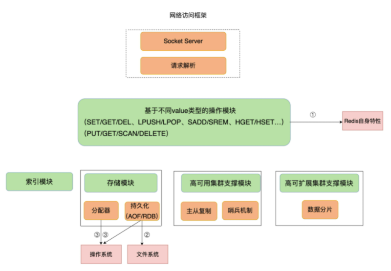

redis变慢问题
判断 Redis 变慢
判断 Redis 变慢，通过redis响应延迟和基线性能的比较来判断。
响应延迟
应用程序使用redis即可得到响应延迟。
基线性能
基线性能：一个系统在低压力、无干扰下的基本性能，这个性能只由当前的软硬件配置决定。redis-cli 命令提供了–intrinsic-latency 选项，可以用来监测和统计测试期间内的最大延迟，这个延迟可以作为 Redis 的基线性能。其中，测试时长可以用–intrinsic-latency 选项的参数来指定。如下：
./redis-cli --intrinsic-latency 120
Max latency so far: 17 microseconds.
Max latency so far: 44 microseconds.
Max latency so far: 94 microseconds.
Max latency so far: 110 microseconds.
Max latency so far: 119 microseconds.
36481658 total runs (avg latency: 3.2893 microseconds / 3289.32 nanoseconds per run).
Worst run took 36x longer than the average latency.
基线性能和当前的操作系统、硬件配置相关。因此，我们可以把它和 Redis 运行时的延迟结合起来，再进一步判断 Redis 性能是否变慢了。
判断基线性能这一点，对于在虚拟化环境下运行的 Redis 来说，非常重要。这是因为，在虚拟化环境（例如虚拟机或容器）中，由于增加了虚拟化软件层，与物理机相比，虚拟机或容器本身就会引入一定的性能开销，所以基线性能会高一些。
判断是否变慢
你要把运行时延迟和基线性能进行对比，如果你观察到的 Redis 运行时延迟是其基线性能的 2 倍及以上，就可以认定 Redis 变慢了。
不过，我们通常是通过客户端和网络访问 Redis 服务，为了避免网络对基线性能的影响，刚刚说的这个命令需要在服务器端直接运行，这也就是说，我们只考虑服务器端软硬件环境的影响。
如果你想了解网络对 Redis 性能的影响，一个简单的方法是用 iPerf 这样的工具，测量从 Redis 客户端到服务器端的网络延迟。如果这个延迟有几十毫秒甚至是几百毫秒，就说明，Redis 运行的网络环境中很可能有大流量的其他应用程序在运行，导致网络拥塞了。这个时候，你就需要协调网络运维，调整网络的流量分配了。
定位变慢的原因
影响 Redis 性能的三大要素： Redis 自身的操作特性、文件系统和操作系统，如下图。

Redis 自身的操作特性
Redis 提供的键值对命令操作对延迟性能的影响。我重点介绍两类关键操作：慢查询命令和过期 key 操作。
慢查询命令
找出慢查询的命令，可以通过 Redis 慢查询日志，或者是 latency monitor 工具来定位。解决方法有两种：
- 用其他高效命令代替。比如说，如果你需要返回一个 SET 中的所有成员时，不要使用 SMEMBERS 命令，而是要使用 SSCAN 多次迭代返回，避免一次返回大量数据，造成线程阻塞。
- 当你需要执行排序、交集、并集操作时，可以在客户端完成，而不要用 SORT、SUNION、SINTER 这些命令，以免拖慢 Redis 实例。
还有一个比较容易忽略的慢查询命令，就是 KEYS。它用于返回和输入模式匹配的所有 key。因为 KEYS 命令需要遍历存储的键值对，所以操作延时高。如果你不了解它的实现而使用了它，就会导致 Redis 性能变慢。所以，KEYS 命令一般不被建议用于生产环境中。
过期 key 操作
过期 key 的自动删除机制。它是 Redis 用来回收内存空间的常用机制，应用广泛，本身就会引起 Redis 操作阻塞，导致性能变慢，所以，你必须要知道该机制对性能的影响。
Redis 键值对的 key 可以设置过期时间。默认情况下，Redis 每 100 毫秒会删除一些过期 key，具体的算法如下：
- 采样 ACTIVE_EXPIRE_CYCLE_LOOKUPS_PER_LOOP 个数的 key，并将其中过期的 key 全部删除；
- 如果超过 25% 的 key 过期了，则重复删除的过程，直到过期 key 的比例降至 25% 以下。
ACTIVE_EXPIRE_CYCLE_LOOKUPS_PER_LOOP 是 Redis 的一个参数，默认是 20，那么，一秒内基本有 200 个过期 key 会被删除。这一策略对清除过期 key、释放内存空间很有帮助。如果每秒钟删除 200 个过期 key，并不会对 Redis 造成太大影响。
但是，如果触发了上面这个算法的第二条，Redis 就会一直删除以释放内存空间。注意，删除操作是阻塞的（Redis 4.0 后可以用异步线程机制来减少阻塞影响）。所以，一旦该条件触发，Redis 的线程就会一直执行删除，这样一来，就没办法正常服务其他的键值操作了，就会进一步引起其他键值操作的延迟增加，Redis 就会变慢。
解决方法：检查业务代码在使用 EXPIREAT 命令设置 key 过期时间时，是否使用了相同的 UNIX 时间戳，有没有使用 EXPIRE 命令给批量的 key 设置相同的过期秒数。如果一批 key 的确是同时过期，你还可以在 EXPIREAT 和 EXPIRE 的过期时间参数上，加上一个一定大小范围内的随机数，这样，既保证了 key 在一个邻近时间范围内被删除，又避免了同时过期造成的压力。
文件系统：AOF 模式
操作系统：swap
小结
9 个检查点的 Checklist，希望你在遇到 Redis 性能变慢时，按照这些步骤逐一检查，高效地解决问题。
- 获取 Redis 实例在当前环境下的基线性能。
- 是否用了慢查询命令？如果是的话，就使用其他命令替代慢查询命令，或者把聚合计算命令放在客户端做。
- 是否对过期 key 设置了相同的过期时间？对于批量删除的 key，可以在每个 key 的过期时间上加一个随机数，避免同时删除。
- 是否存在 bigkey？ 对于 bigkey 的删除操作，如果你的 Redis 是 4.0 及以上的版本，可以直接利用异步线程机制减少主线程阻塞；如果是 Redis 4.0 以前的版本，可以使用 SCAN 命令迭代删除；对于 bigkey 的集合查询和聚合操作，可以使用 SCAN 命令在客户端完成。
- Redis AOF 配置级别是什么？业务层面是否的确需要这一可靠性级别？如果我们需要高性能，同时也允许数据丢失，可以将配置项 no-appendfsync-on-rewrite 设置为 yes，避免 AOF 重写和 fsync 竞争磁盘 IO 资源，导致 Redis 延迟增加。当然， 如果既需要高性能又需要高可靠性，最好使用高速固态盘作为 AOF 日志的写入盘。
- Redis 实例的内存使用是否过大？发生 swap 了吗？如果是的话，就增加机器内存，或者是使用 Redis 集群，分摊单机 Redis 的键值对数量和内存压力。同时，要避免出现 Redis 和其他内存需求大的应用共享机器的情况。
- 在 Redis 实例的运行环境中，是否启用了透明大页机制？如果是的话，直接关闭内存大页机制就行了。
- 是否运行了 Redis 主从集群？如果是的话，把主库实例的数据量大小控制在 2~4GB，以免主从复制时，从库因加载大的 RDB 文件而阻塞。
- 是否使用了多核 CPU 或 NUMA 架构的机器运行 Redis 实例？使用多核 CPU 时，可以给 Redis 实例绑定物理核；使用 NUMA 架构时，注意把 Redis 实例和网络中断处理程序运行在同一个 CPU Socket 上。
关于如何分析、排查、解决Redis变慢问题，林外一份checklist如下：
1、使用复杂度过高的命令（例如SORT/SUION/ZUNIONSTORE/KEYS），或一次查询全量数据（例如LRANGE key 0 N，但N很大）
分析：a) 查看slowlog是否存在这些命令 b) Redis进程CPU使用率是否飙升（聚合运算命令导致）
解决：a) 不使用复杂度过高的命令，或用其他方式代替实现（放在客户端做） b) 数据尽量分批查询（LRANGE key 0 N，建议N<=100，查询全量数据建议使用HSCAN/SSCAN/ZSCAN）
2、操作bigkey
分析：a) slowlog出现很多SET/DELETE变慢命令（bigkey分配内存和释放内存变慢） b) 使用redis-cli -h $host -p $port --bigkeys扫描出很多bigkey
解决：a) 优化业务，避免存储bigkey b) Redis 4.0+可开启lazy-free机制
3、大量key集中过期
分析：a) 业务使用EXPIREAT/PEXPIREAT命令 b) Redis info中的expired_keys指标短期突增
解决：a) 优化业务，过期增加随机时间，把时间打散，减轻删除过期key的压力 b) 运维层面，监控expired_keys指标，有短期突增及时报警排查
4、Redis内存达到maxmemory
分析：a) 实例内存达到maxmemory，且写入量大，淘汰key压力变大 b) Redis info中的evicted_keys指标短期突增
解决：a) 业务层面，根据情况调整淘汰策略（随机比LRU快） b) 运维层面，监控evicted_keys指标，有短期突增及时报警 c) 集群扩容，多个实例减轻淘汰key的压力
5、大量短连接请求
分析：Redis处理大量短连接请求，TCP三次握手和四次挥手也会增加耗时
解决：使用长连接操作Redis
6、生成RDB和AOF重写fork耗时严重
分析：a) Redis变慢只发生在生成RDB和AOF重写期间 b) 实例占用内存越大，fork拷贝内存页表越久 c) Redis info中latest_fork_usec耗时变长
解决：a) 实例尽量小 b) Redis尽量部署在物理机上 c) 优化备份策略（例如低峰期备份） d) 合理配置repl-backlog和slave client-output-buffer-limit，避免主从全量同步 e) 视情况考虑关闭AOF f) 监控latest_fork_usec耗时是否变长
7、AOF使用awalys机制
分析：磁盘IO负载变高
解决：a) 使用everysec机制 b) 丢失数据不敏感的业务不开启AOF
8、使用Swap
分析：a) 所有请求全部开始变慢 b) slowlog大量慢日志 c) 查看Redis进程是否使用到了Swap
解决：a) 增加机器内存 b) 集群扩容 c) Swap使用时监控报警
9、进程绑定CPU不合理
分析：a) Redis进程只绑定一个CPU逻辑核 b) NUMA架构下，网络中断处理程序和Redis进程没有绑定在同一个Socket下
解决：a) Redis进程绑定多个CPU逻辑核 b) 网络中断处理程序和Redis进程绑定在同一个Socket下
10、开启透明大页机制
分析：生成RDB和AOF重写期间，主线程处理写请求耗时变长（拷贝内存副本耗时变长）
解决：关闭透明大页机制
11、网卡负载过高
分析：a) TCP/IP层延迟变大，丢包重传变多 b) 是否存在流量过大的实例占满带宽
解决：a) 机器网络资源监控，负载过高及时报警 b) 提前规划部署策略，访问量大的实例隔离部署
总之，Redis的性能与CPU、内存、网络、磁盘都息息相关，任何一处发生问题，都会影响到Redis的性能。
主要涉及到的包括业务使用层面和运维层面：业务人员需要了解Redis基本的运行原理，使用合理的命令、规避bigke问题和集中过期问题。运维层面需要DBA提前规划好部署策略，预留足够的资源，同时做好监控，这样当发生问题时，能够及时发现并尽快处理。
问题
在 Redis 中，还有哪些其他命令可以代替 KEYS 命令，实现同样的功能呢？这些命令的复杂度会导致 Redis 变慢吗？
答：如果想要获取整个实例的所有key，建议使用SCAN命令代替。客户端通过执行SCAN $cursor COUNT $count可以得到一批key以及下一个游标$cursor，然后把这个$cursor当作SCAN的参数，再次执行，以此往复，直到返回的$cursor为0时，就把整个实例中的所有key遍历出来了。
关于SCAN讨论最多的问题就是，Redis在做Rehash时，会不会漏key或返回重复的key。
在使用SCAN命令时，不会漏key，但可能会得到重复的key，这主要和Redis的Rehash机制有关。Redis的所有key存在一个全局的哈希表中，如果存入的key慢慢变多，在达到一定阈值后，为了避免哈希冲突导致查询效率降低，这个哈希表会进行扩容。与之对应的，key数量逐渐变少时，这个哈希表会缩容以节省空间。
1、为什么不会漏key？Redis在SCAN遍历全局哈希表时，采用高位进位法的方式遍历哈希桶（可网上查询图例，一看就明白），当哈希表扩容后，通过这种算法遍历，旧哈希表中的数据映射到新哈希表，依旧会保留原来的先后顺序，这样就可以保证遍历时不会遗漏也不会重复。
2、为什么SCAN会得到重复的key？这个情况主要发生在哈希表缩容。已经遍历过的哈希桶在缩容时，会映射到新哈希表没有遍历到的位置，所以继续遍历就会对同一个key返回多次。
SCAN是遍历整个实例的所有key，另外Redis针对Hash/Set/Sorted Set也提供了HSCAN/SSCAN/ZSCAN命令，用于遍历一个key中的所有元素，建议在获取一个bigkey的所有数据时使用，避免发生阻塞风险。
但是使用HSCAN/SSCAN/ZSCAN命令，返回的元素数量与执行SCAN逻辑可能不同。执行SCAN $cursor COUNT $count时一次最多返回count个数的key，数量不会超过count。
但Hash/Set/Sorted Set元素数量比较少时，底层会采用intset/ziplist方式存储，如果以这种方式存储，在执行HSCAN/SSCAN/ZSCAN命令时，会无视count参数，直接把所有元素一次性返回，也就是说，得到的元素数量是会大于count参数的。当底层转为哈希表或跳表存储时，才会真正使用发count参数，最多返回count个元素。